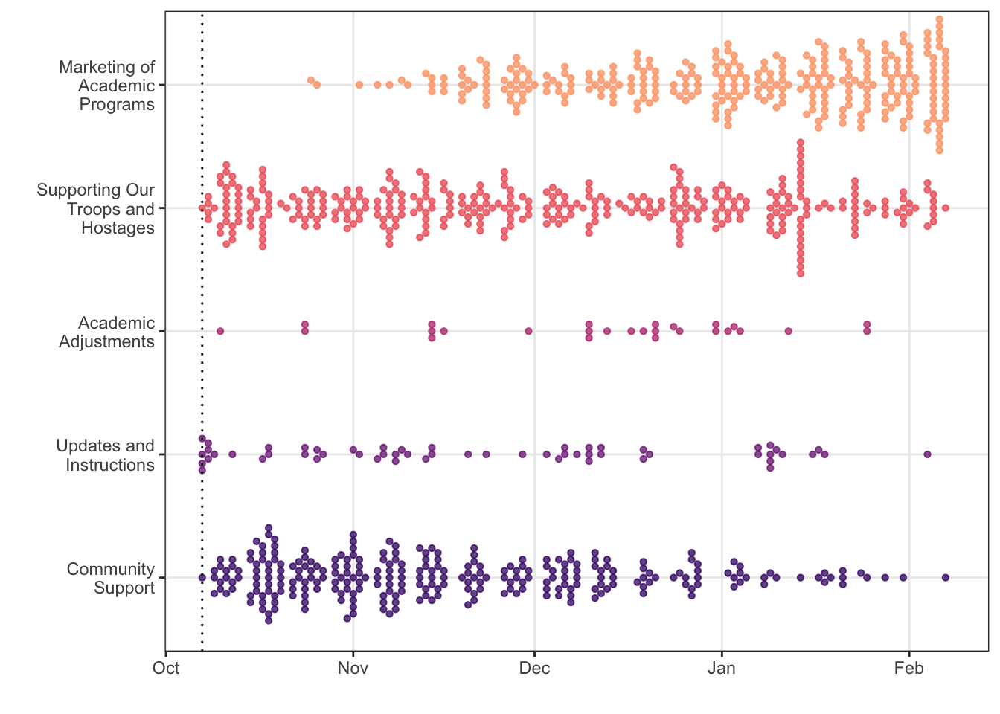
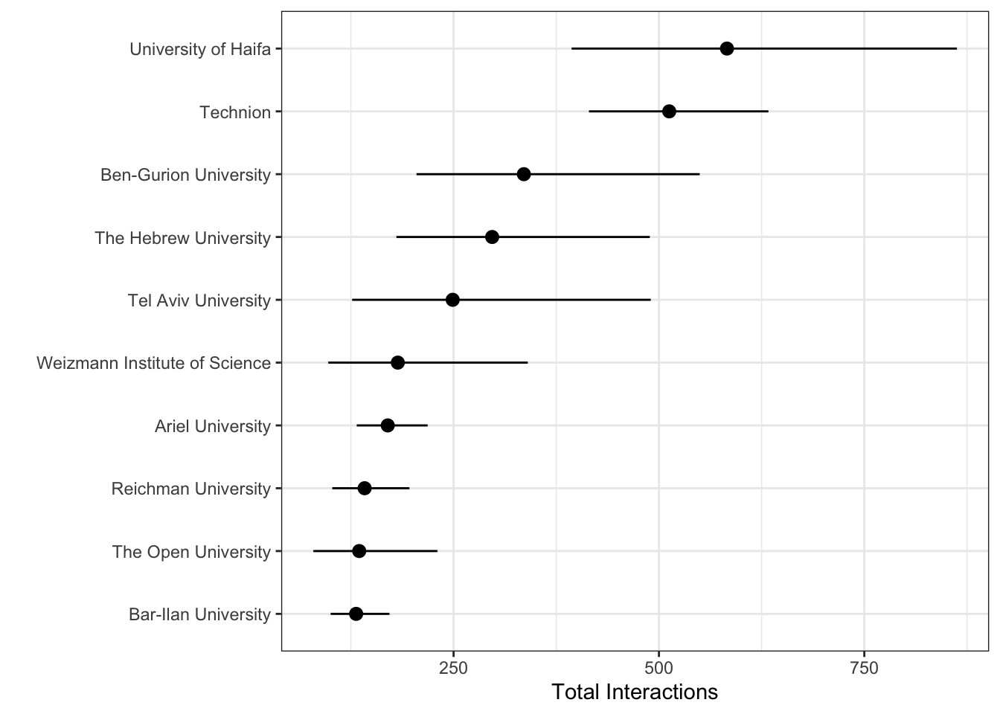
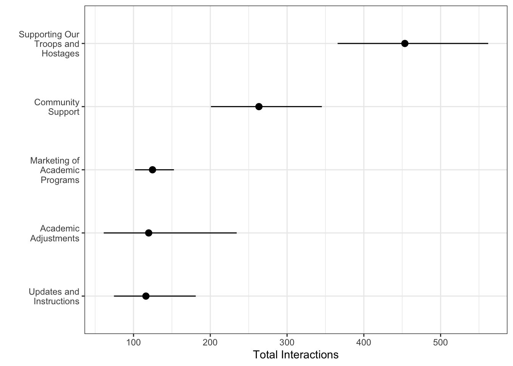
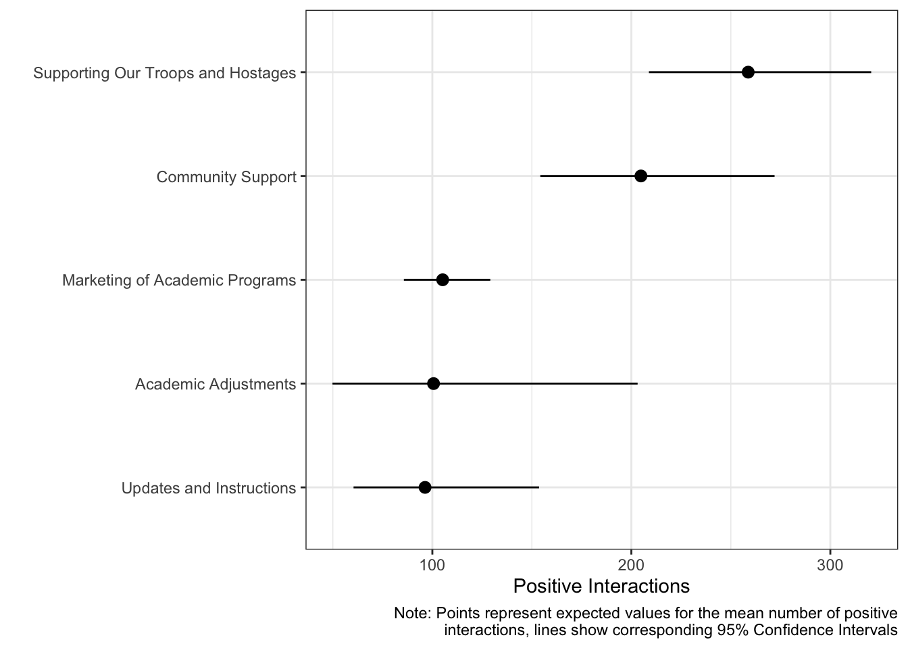
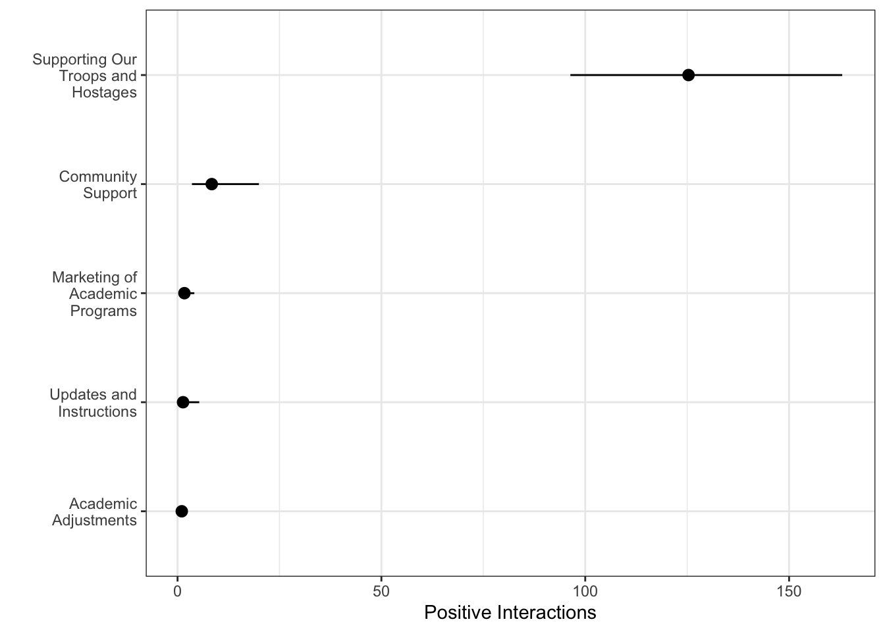

University | Number of Posts by Category | Total Number of Posts | ||||
|---|---|---|---|---|---|---|
Community Support | Updates and Instructions | Academic Adjustments | Supporting Our Troops and Hostages | Marketing of Academic Programs | ||
Ariel University | 17 | 10 | 2 | 54 | 30 | 113 |
Bar-Ilan University | 24 | 6 | 2 | 42 | 54 | 128 |
Ben-Gurion University | 32 | 4 | 2 | 28 | 18 | 84 |
Reichman University | 40 | 2 | 0 | 43 | 41 | 126 |
Technion | 33 | 6 | 3 | 38 | 31 | 111 |
Tel Aviv University | 22 | 4 | 6 | 31 | 40 | 103 |
The Hebrew University | 26 | 11 | 3 | 31 | 16 | 87 |
The Open University | 22 | 10 | 4 | 23 | 15 | 74 |
University of Haifa | 39 | 3 | 4 | 46 | 15 | 107 |
Weizmann Institute of Science | 17 | 1 | 1 | 10 | 48 | 77 |
Analysis and Results
Method
Data was collected from 10 leading Israeli universities’ public Facebook pages, using CrowdTangle software (About Us | CrowdTangle Help Center, n.d.) to extract and mine data. This enabled us to export all data and information from the universities official Facebook pages, including user responses, engagement rates, and reactions.
Each page’s data was converted into a CSV file, with each sheet representing a different page. The timeframe of this sample was initially started on Oct 7th, 2023, in response to the massacre and terminated on February 7th, 2024, four months after the starting of the war.
Measures
We were interested in how the number and kind (positive / negative) of interactions to posts were related to the university and the category of post, and therefore created the following measures:
Post Category
Posts were manually categorized into one of 5 categories: “Community Support”, “Updates and Instructions”, “Academic Adjustments”, “Supporting Our Troops and Hostages”, and “Marketing of Academic Programs”.
Total Interaction
Total interaction was measured using the sum of interactions, such as likes, shares, reactions, and comments, on a page, which is consistent with previous studies (Eberl et al., 2020).
Positive Sentiment
Positive sentiment was calculated for each post by adding the number of positive reactions, namely “Likes”, “Love”, and “Care” reactions.
Negative Sentiment
Negative sentiment was calculated for each post by adding the number of negative reactions, namely the “Sad” and “Angry” reactions.
Analysis
All statistical analyses were conducted with R (R Core Team, 2024) version 4.3.3 and RStudio (RStudio, 2024) version 2023.12.1.402. All data and code are available on this project’s GitHub repository (https://github.com/vbrazao/gy_uni_marketing).
Our inferential analysis relies on a series of generalized linear models. To account for potential overdispersion in each of our count outcomes (total interactions, positive sentiment, negative sentiment), we used quasi-poisson models with robust standard errors (Wooldridge, 2002). For ease of interpretation, we then used the models to create predictions on the response scale (e.g., the number of interactions) for our different groups of interest and plotted means and uncertainty of those predictions.
Results
Descriptive analysis
We collected 1010 posts from the 10 Universities included in the sample. Table 1 shows the total number of posts in each category created within each University’s Facebook page, as well as the total number of posts for each University. We can see that all universities had over 70 posts in this period, with Bar-Ilan University topping the chart with 128 posts.
Examining the descriptive statistics by University, as presented in Table 2, we see clear signs of overdispersion (the standard deviation of each count is clearly higher than the mean).
University | Interactions | Pos Sentiment | Neg Sentiment | N | Max Number of Followers | |||
|---|---|---|---|---|---|---|---|---|
Mean | SD | Mean | SD | Mean | SD | |||
Tel Aviv University | 248.92 | 868.73 | 132.78 | 198.74 | 60.75 | 355.04 | 103 | 109,585.00 |
Ben-Gurion University | 335.55 | 769.72 | 242.86 | 517.27 | 28.54 | 176.79 | 84 | 62,709.00 |
Ariel University | 169.87 | 230.75 | 88.00 | 130.22 | 68.70 | 123.20 | 113 | 43,928.00 |
University of Haifa | 582.79 | 1,201.01 | 380.12 | 828.13 | 67.28 | 229.93 | 107 | 80,452.00 |
Technion | 512.50 | 580.17 | 396.41 | 400.28 | 64.81 | 273.23 | 111 | 104,777.00 |
Reichman University | 141.71 | 263.16 | 94.22 | 139.13 | 30.65 | 117.70 | 126 | 51,381.00 |
Bar-Ilan University | 131.36 | 203.31 | 73.46 | 94.84 | 47.23 | 129.08 | 128 | 62,166.00 |
The Hebrew University | 296.97 | 700.46 | 204.63 | 534.87 | 40.17 | 150.56 | 87 | 75,917.00 |
The Open University | 135.11 | 314.07 | 94.07 | 232.83 | 16.28 | 94.52 | 74 | 85,324.00 |
Weizmann Institute of Science | 182.08 | 506.57 | 144.09 | 422.64 | 11.13 | 57.99 | 77 | 35,555.00 |
The same can be observed when we calculate descriptive statistics for each category instead, as in Table 3. More descriptive analyses, including simple visualizations of the raw data itself, are available on the GitHub repository (https://github.com/vbrazao/gy_uni_marketing), within the folder “03_generated-reports”.
Category | Interactions | Pos Sentiment | Neg Sentiment | N | |||
|---|---|---|---|---|---|---|---|
Mean | SD | Mean | SD | Mean | SD | ||
Marketing of Academic Programs | 124.71 | 225.28 | 105.18 | 192.78 | 1.69 | 13.45 | 308 |
Community Support | 263.35 | 599.46 | 204.82 | 487.87 | 8.39 | 61.06 | 272 |
Supporting Our Troops and Hostages | 453.45 | 922.39 | 258.72 | 525.27 | 125.34 | 312.33 | 346 |
Updates and Instructions | 116.12 | 196.86 | 96.33 | 171.70 | 1.35 | 7.07 | 57 |
Academic Adjustments | 119.74 | 209.25 | 100.59 | 183.93 | 1.04 | 1.99 | 27 |
How are posts distributed over time?
As illustrated in Figure 1, there seems to be a trade-off over time between posts related to the marketing of academic programs (which increase in frequency over time) and posts related to community support (which decrease over time). In contrast, there is a high frequency of posts supporting the troops and hostages which does not seem to greatly change over time, and a low frequency of posts related to academic adjustments and updates and instructions throughout the 4 months of data. Alternative visualizations of the data as well as a table summarizing the frequency of posts per 7 day period are presented in the supplementary Descriptives report, available on the GitHub repository (https://github.com/vbrazao/gy_uni_marketing), within the folder “03_generated-reports”.

Inferential analysis
In this section, we highlight the model results most relevant to our research questions. A full inferential report with further results is available on the GitHub repository (https://github.com/vbrazao/gy_uni_marketing), within the folder “03_generated-reports”.
We will look at the following questions in order:
How do total interactions to posts vary by university?
How do total interactions to posts vary by post category?
How do positive interactions to posts vary by post category?
How do negative interactions to posts vary by post category?
Total Interaction
How do total interactions vary by university?
Using our quasi-poisson model predicting total interactions as a function of university, we generate predictions for total interactions across the dataset and marginalize over the different universities. The results, presented in Figure 2, show that the University of Haifa has the most interactions and Bar-Ilan University the least.

We compute pairwise differences to evaluate which universities receive significantly more (or fewer) interactions than the others. For brevity, Table 4 below displays all the significant estimates for pairwise differences. For the unabridged table and accompanying plots, see the online Inferential Report, available on the GitHub repository (https://github.com/vbrazao/gy_uni_marketing), within the folder “03_generated-reports”.
Term | estimate | std.error | statistic | p | 95% CI |
|---|---|---|---|---|---|
(Ariel University) - (Technion) | -342.64 | 59.46 | -5.76 | < .001*** | [-459.17, -226.10] |
(Ariel University) - (University of Haifa) | -412.93 | 118.67 | -3.48 | .001*** | [-645.52, -180.33] |
(Bar-Ilan University) - (Ben-Gurion University) | -204.19 | 86.39 | -2.36 | .018* | [-373.51, -34.86] |
(Bar-Ilan University) - (Technion) | -381.15 | 58.18 | -6.55 | < .001*** | [-495.18, -267.11] |
(Bar-Ilan University) - (The Hebrew University) | -165.61 | 77.66 | -2.13 | .033* | [-317.81, -13.40] |
(Bar-Ilan University) - (University of Haifa) | -451.44 | 118.04 | -3.82 | < .001*** | [-682.79, -220.08] |
(Ben-Gurion University) - (Reichman University) | 193.84 | 87.70 | 2.21 | .027* | [21.94, 365.74] |
(Ben-Gurion University) - (The Open University) | 200.44 | 92.14 | 2.18 | .030* | [19.85, 381.03] |
(Reichman University) - (Technion) | -370.80 | 60.12 | -6.17 | < .001*** | [-488.62, -252.97] |
(Reichman University) - (The Hebrew University) | -155.26 | 79.12 | -1.96 | .050* | [-310.32, -0.20] |
(Reichman University) - (University of Haifa) | -441.09 | 119.00 | -3.71 | < .001*** | [-674.33, -207.85] |
(Technion) - (Tel Aviv University) | 263.58 | 102.27 | 2.58 | .010** | [63.14, 464.02] |
(Technion) - (The Hebrew University) | 215.54 | 93.62 | 2.30 | .021* | [32.04, 399.04] |
(Technion) - (The Open University) | 377.40 | 66.42 | 5.68 | < .001*** | [247.22, 507.57] |
(Technion) - (Weizmann Institute of Science) | 330.43 | 80.23 | 4.12 | < .001*** | [173.18, 487.67] |
(Tel Aviv University) - (University of Haifa) | -333.87 | 144.94 | -2.30 | .021* | [-617.94, -49.80] |
(The Hebrew University) - (University of Haifa) | -285.83 | 138.97 | -2.06 | .040* | [-558.21, -13.45] |
(The Open University) - (University of Haifa) | -447.69 | 122.31 | -3.66 | < .001*** | [-687.40, -207.97] |
(University of Haifa) - (Weizmann Institute of Science) | 400.72 | 130.32 | 3.07 | .002** | [145.29, 656.15] |
How do total interactions vary by post category?
Using our quasi-poisson model predicting total interactions as a function of post category, we generate predictions for total interactions across the dataset and marginalize over the different categories. The results, presented in Figure 3, show that “Supporting Our Troops and Hostages” has the most interactions and “Updates and Instructions” the least.

We compute pairwise differences to evaluate which categories receive significantly more (or fewer) interactions than the others and present results in Table 5 below. All differences are significant except for those between the categories “Updates and Instructions”, “Marketing of Academic Programs”, and “Academic Adjustments”. Posts in the category “Supporting our Troops and Hostages” received significantly more interactions than posts in any other category.
Term | estimate | std.error | statistic | p | 95% CI |
|---|---|---|---|---|---|
Community Support - Updates and Instructions | 147.23 | 44.92 | 3.28 | .001** | [59.18, 235.28] |
Community Support - Academic Adjustments | 143.61 | 54.86 | 2.62 | .009** | [36.08, 251.14] |
Community Support - Supporting Our Troops and Hostages | -190.10 | 61.58 | -3.09 | .002** | [-310.79, -69.40] |
Community Support - Marketing of Academic Programs | 138.64 | 38.62 | 3.59 | < .001*** | [62.95, 214.33] |
Updates and Instructions - Academic Adjustments | -3.62 | 48.75 | -0.07 | .941 | [-99.16, 91.92] |
Updates and Instructions - Supporting Our Troops and Hostages | -337.33 | 56.20 | -6.00 | < .001*** | [-447.47, -227.18] |
Updates and Instructions - Marketing of Academic Programs | -8.59 | 29.28 | -0.29 | .769 | [-65.98, 48.80] |
Academic Adjustments - Supporting Our Troops and Hostages | -333.71 | 64.42 | -5.18 | < .001*** | [-459.98, -207.44] |
Academic Adjustments - Marketing of Academic Programs | -4.97 | 43.00 | -0.12 | .908 | [-89.26, 79.31] |
Supporting Our Troops and Hostages - Marketing of Academic Programs | 328.74 | 51.30 | 6.41 | < .001*** | [228.20, 429.28] |
How do positive interactions vary by post category?
Using our quasi-poisson model predicting positive sentiment as a function of post category, we generate predictions for positive sentiment across the dataset and marginalize over the different categories. The results, presented in Figure 4, show that “Supporting Our Troops and Hostages” has the most interactions and “Updates and Instructions” the least.

We compute pairwise differences to evaluate which categories receive significantly more (or fewer) interactions that the others and present results in Table 6 below. The category “Supporting our Troops and Hostages” receives more positive interactions that the rest, but not significantly more than “Community Support”.
Term | estimate | std.error | statistic | p | 95% CI |
|---|---|---|---|---|---|
Community Support - Updates and Instructions | 108.48 | 37.48 | 2.89 | .004** | [35.02, 181.94] |
Community Support - Academic Adjustments | 104.22 | 46.68 | 2.23 | .026* | [12.72, 195.72] |
Community Support - Supporting Our Troops and Hostages | -53.90 | 40.96 | -1.32 | .188 | [-134.19, 26.39] |
Community Support - Marketing of Academic Programs | 99.63 | 31.61 | 3.15 | .002** | [37.68, 161.59] |
Updates and Instructions - Academic Adjustments | -4.26 | 42.75 | -0.10 | .921 | [-88.05, 79.53] |
Updates and Instructions - Supporting Our Troops and Hostages | -162.38 | 36.42 | -4.46 | < .001*** | [-233.76, -91.01] |
Updates and Instructions - Marketing of Academic Programs | -8.85 | 25.45 | -0.35 | .728 | [-58.72, 41.02] |
Academic Adjustments - Supporting Our Troops and Hostages | -158.12 | 45.84 | -3.45 | .001*** | [-247.96, -68.29] |
Academic Adjustments - Marketing of Academic Programs | -4.59 | 37.71 | -0.12 | .903 | [-78.50, 69.33] |
Supporting Our Troops and Hostages - Marketing of Academic Programs | 153.53 | 30.34 | 5.06 | < .001*** | [94.06, 213.01] |
How do negative interactions vary by post category?
Using our quasi-poisson model predicting negative sentiment as a function of post category, we generate predictions for negative sentiment across the dataset and marginalize over the different categories. The results, presented in Figure 5, show that “Supporting Our Troops and Hostages” has the most interactions and “Updates and Instructions” the least. We can also see that categories other than “Supporting Our Troops and Hostages” receive a comparatively negligible amount of negative interactions.

We compute pairwise differences to evaluate which categories receive significantly more (or fewer) interactions than the others and present results in Table 7 below. The category “Supporting our Troops and Hostages” receives more negative interactions that all other categories, and “Community Support” posts receive significantly more negative interactions than “Academic Adjustments” posts, but this difference is small at 7.36 more negative interactions (95% CI[0.05, 14.67]).
Term | estimate | std.error | statistic | p | 95% CI |
|---|---|---|---|---|---|
Community Support - Updates and Instructions | 7.04 | 3.83 | 1.84 | .066 | [-0.46, 14.55] |
Community Support - Academic Adjustments | 7.36 | 3.73 | 1.97 | .049* | [0.05, 14.67] |
Community Support - Supporting Our Troops and Hostages | -116.94 | 17.22 | -6.79 | < .001*** | [-150.69, -83.19] |
Community Support - Marketing of Academic Programs | 6.71 | 3.79 | 1.77 | .077 | [-0.72, 14.13] |
Updates and Instructions - Academic Adjustments | 0.31 | 1.02 | 0.31 | .759 | [-1.69, 2.32] |
Updates and Instructions - Supporting Our Troops and Hostages | -123.98 | 16.84 | -7.36 | < .001*** | [-156.99, -90.98] |
Updates and Instructions - Marketing of Academic Programs | -0.34 | 1.22 | -0.28 | .782 | [-2.72, 2.05] |
Academic Adjustments - Supporting Our Troops and Hostages | -124.30 | 16.82 | -7.39 | < .001*** | [-157.26, -91.33] |
Academic Adjustments - Marketing of Academic Programs | -0.65 | 0.86 | -0.76 | .450 | [-2.34, 1.04] |
Supporting Our Troops and Hostages - Marketing of Academic Programs | 123.65 | 16.83 | 7.35 | < .001*** | [90.66, 156.64] |
References
About Us | CrowdTangle Help Center. (n.d.). http://help.crowdtangle.com/en/articles/4201940-about-us
Eberl, J.-M., Tolochko, P., Jost, P., Heidenreich, T., & Boomgaarden, H. G. (2020). What’s in a post? How sentiment and issue salience affect users’ emotional reactions on Facebook. Journal of Information Technology & Politics, 17(1), 48–65. https://doi.org/10.1080/19331681.2019.1710318
R Core Team. (2024). R: A language and environment for statistical computing. R Foundation for Statistical Computing. https://www.R-project.org/
RStudio: Integrated development environment for r. (2024). Posit Software, PBC. http://www.posit.co/
Wooldridge, J. M. (2002). Econometric analysis of cross section and panel data. MIT Press.